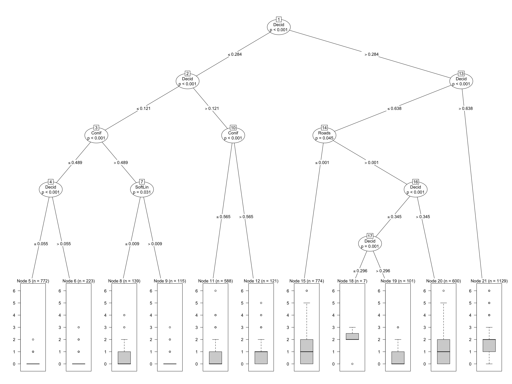
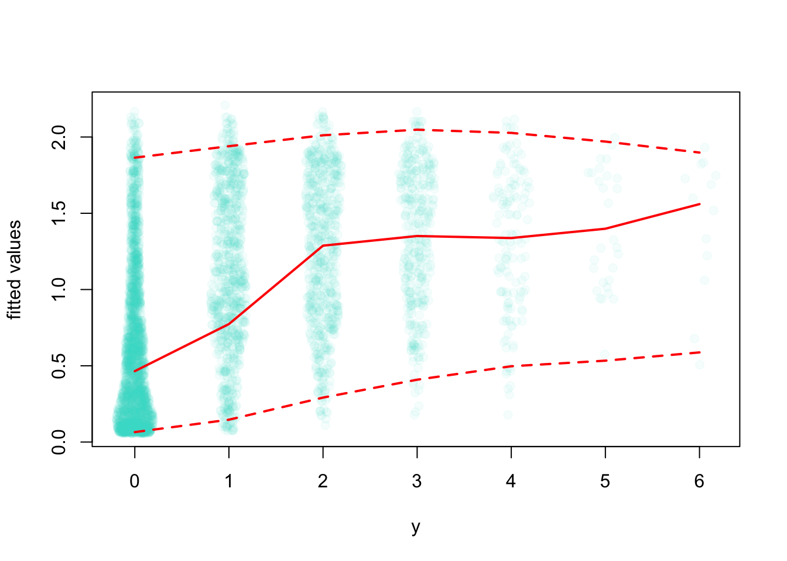
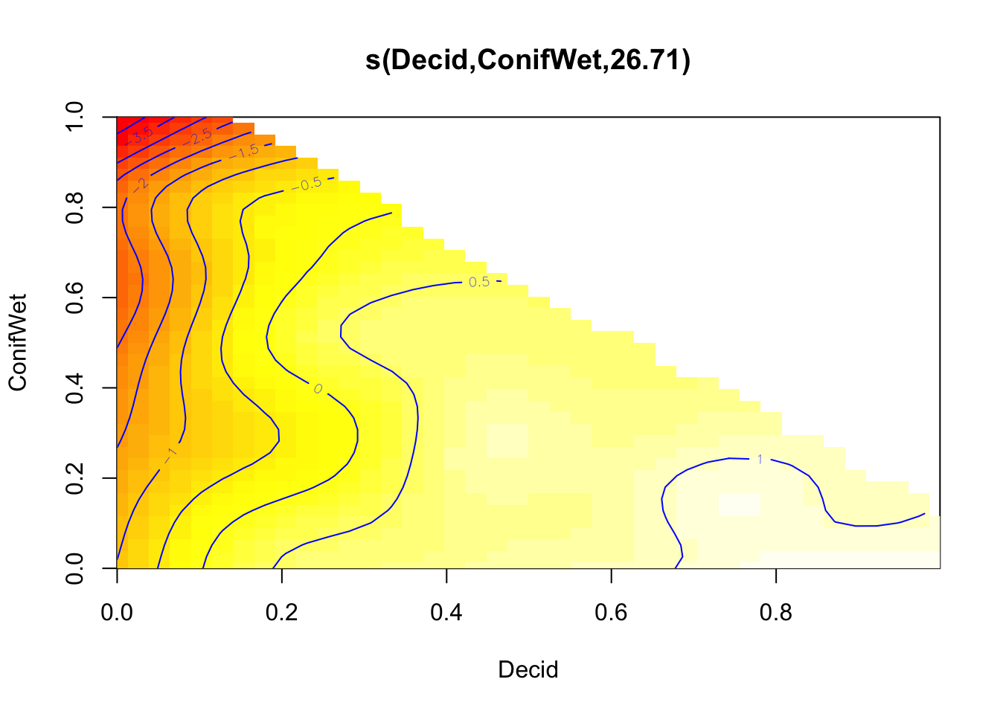
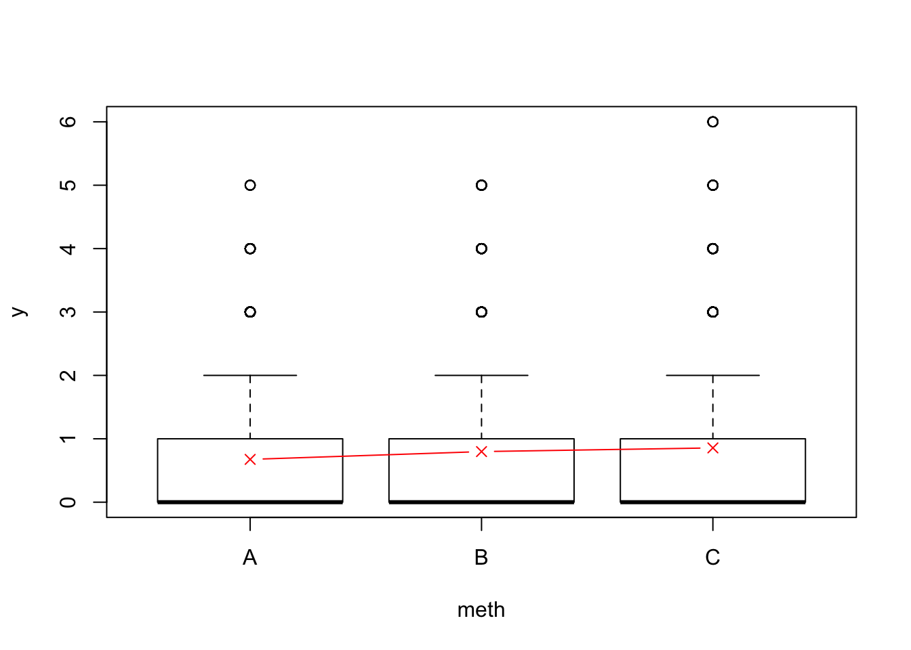
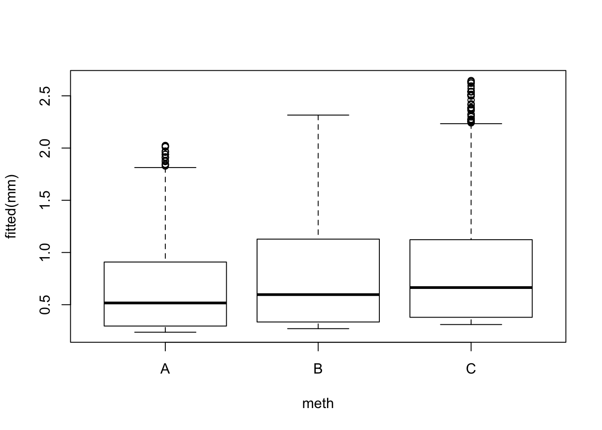
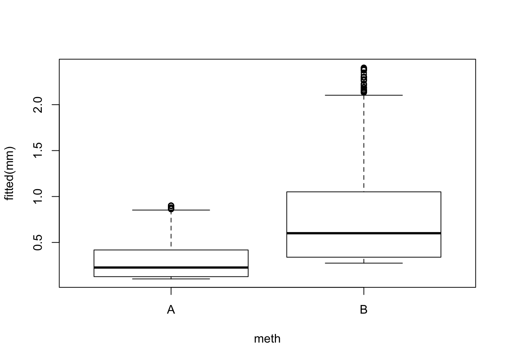
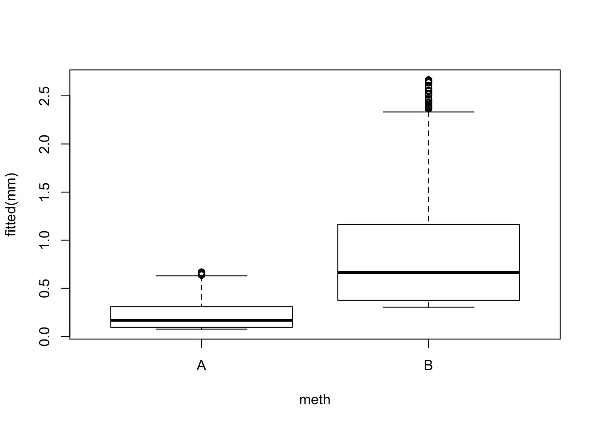

Chapter 3 A Primer in Regression Techniques
All models are wrong, but some are useful – Box
3.1 Introduction
This chapter will provide all the foundations we need for the coming chapters. It is not intended as a general and all-exhaustive introduction to regression techniques, but rather the minimum requirement moving forwards. We will also hone our data processing and plotting skills.
3.2 Prerequisites
library(mefa4) # data manipulation
library(mgcv) # GAMs
library(pscl) # zero-inflated models
library(lme4) # GLMMs
library(MASS) # Negative Binomial GLM
library(partykit) # regression trees
library(intrval) # interval magic
library(opticut) # optimal partitioning
library(visreg) # regression visualization
library(ResourceSelection) # marginal effects
library(MuMIn) # multi-model inference
source("functions.R") # some useful stuff
load("_data/josm/josm.rda") # JOSM dataLet’s pick a species, Ovenbird (OVEN), that is quite common and abundant in the data set.
We put together a little data set to work with:
spp <- "OVEN"
ytot <- Xtab(~ SiteID + SpeciesID, josm$counts[josm$counts$DetectType1 != "V",])
ytot <- ytot[,colSums(ytot > 0) > 0]
x <- data.frame(
josm$surveys,
y=as.numeric(ytot[rownames(josm$surveys), spp]))
x$FOR <- x$Decid + x$Conif+ x$ConifWet # forest
x$AHF <- x$Agr + x$UrbInd + x$Roads # 'alienating' human footprint
x$WET <- x$OpenWet + x$ConifWet + x$Water # wet + water
cn <- c("Open", "Water", "Agr", "UrbInd", "SoftLin", "Roads", "Decid",
"OpenWet", "Conif", "ConifWet")
x$HAB <- droplevels(find_max(x[,cn])$index) # drop empty levels
x$DEC <- ifelse(x$HAB == "Decid", 1, 0)
table(x$y)##
## 0 1 2 3 4 5 6
## 2493 883 656 363 132 29 133.3 Poisson null model
The null model states that the expected values of the count at all locations are identical: \(E[Y_i]=\lambda\) (\(i=1,...,n\)), where \(Y_i\) is a random variable that follows a Poisson distribution with mean \(\lambda\): \((Y_i \mid \lambda) \sim Poisson(\lambda)\). The observation (\(y_i\)) is a realization of the random variables \(Y\) at site \(i\), these observations are independent and identically distributed (i.i.d.), and we have \(n\) observations in total.
Saying the the distribution is Poisson is an assumption in itself. For example we assume that the variance equals the mean (\(V(\mu)=\mu\)).
mP0 <- glm(y ~ 1, data=x, family=poisson)
mean(x$y)## [1] 0.8831mean(fitted(mP0))## [1] 0.8831exp(coef(mP0))## (Intercept)
## 0.8831summary(mP0)##
## Call:
## glm(formula = y ~ 1, family = poisson, data = x)
##
## Deviance Residuals:
## Min 1Q Median 3Q Max
## -1.33 -1.33 -1.33 1.02 3.57
##
## Coefficients:
## Estimate Std. Error z value Pr(>|z|)
## (Intercept) -0.1243 0.0157 -7.89 2.9e-15 ***
## ---
## Signif. codes: 0 '***' 0.001 '**' 0.01 '*' 0.05 '.' 0.1 ' ' 1
##
## (Dispersion parameter for poisson family taken to be 1)
##
## Null deviance: 7424.8 on 4568 degrees of freedom
## Residual deviance: 7424.8 on 4568 degrees of freedom
## AIC: 12573
##
## Number of Fisher Scoring iterations: 6The family=poisson specification implicitly assumes that we use a logarithmic link functions,
that is to say that \(log(\lambda) = \beta_0\), or equivalently: \(\lambda = e^{\beta_0}\).
The mean of the observations equal the mean of the fitted values, as expected.
The logarithmic function is called the link function, its inverse, the exponential function is called the inverse link function. The model family has these convenently stored for us:
mP0$family##
## Family: poisson
## Link function: logmP0$family$linkfun## function (mu)
## log(mu)
## <environment: namespace:stats>mP0$family$linkinv## function (eta)
## pmax(exp(eta), .Machine$double.eps)
## <environment: namespace:stats>3.4 Exploring covariates
Now, in the absence of info about species biology, we are looking at a blank page.
How should we proceed? What kind of covariate (linear predictor) should we use?
We can do a quick and dirty exploration to see what are the likely candidates.
We use a regression tree (ctree refers to conditional trees). It is
a nonparametric method based on binary recursive partitioning in a conditional inference framework.
This means that binary splits are made along the predictor variables,
and the explanatory power of the split is assessed based on how it
maximized difference between the splits and minimized the difference inside the splits.
It is called conditional, because every new split is conditional on the previous splits
(difference can be measured in many different ways, think e.g. sum of squares).
The stopping rule in this implementation is based on permutation tests (see ?ctree or details
and references).
mCT <- ctree(y ~ Open + Water + Agr + UrbInd + SoftLin + Roads +
Decid + OpenWet + Conif + ConifWet, data=x)
plot(mCT)
The model can be seen as a piecewise constant regression, where each bucket (defined by the splits along the tree) yields a constant predictions based on the mean of the observations in the bucket. Any new data classified into the same bucket will get the same value. There is no notion of uncertainty (confidence or prediction intervals) in this nonparameric model.
But we see something very useful: the proportion of deciduous forest in the landscape seems to be vary influential for Ovenbird abundance.
3.5 Single covariate
With this new found knowledge, let’s fit a parametric (Poisson) linear model
using Decid as a predictor:
mP1 <- glm(y ~ Decid, data=x, family=poisson)
mean(x$y)## [1] 0.8831mean(fitted(mP0))## [1] 0.8831coef(mP1)## (Intercept) Decid
## -1.164 2.134Same as before, the mean of the observations equal the mean of the fitted values.
But instead of only the intercapt, now we have 2 coefficients estimated.
Our linear predictor thus looks like:
\(log(\lambda_i) = \beta_0 + \beta_1 x_{1i}\). This means that expected abundance is
\(e^{\beta_0}\) where Decid=0,
\(e^{\beta_0}e^{\beta_1}\) where Decid=1,
and \(e^{\beta_0+\beta_1 x_{1}}\) in between.
The relationship can be visualized by plotting the fitted values against the predictor, or using the coefficients to make predictions using our formula:
dec <- seq(0, 1, 0.01)
lam <- exp(coef(mP1)[1] + coef(mP1)[2] * dec)
plot(fitted(mP1) ~ Decid, x, pch=19, col="grey")
lines(lam ~ dec, col=2)
rug(x$Decid)The model summary tells us that resudials are not quite right (we would expect
0 median and symmertic tails), in line with residual deviance
being much higher than residual degrees of freedom
(these should be close if the Poisson assumption holds).
But, the Decid effect is significant (meaning that the effect size is
large compared to the standard error):
summary(mP1)##
## Call:
## glm(formula = y ~ Decid, family = poisson, data = x)
##
## Deviance Residuals:
## Min 1Q Median 3Q Max
## -2.291 -0.977 -0.790 0.469 4.197
##
## Coefficients:
## Estimate Std. Error z value Pr(>|z|)
## (Intercept) -1.1643 0.0352 -33.1 <2e-16 ***
## Decid 2.1338 0.0537 39.7 <2e-16 ***
## ---
## Signif. codes: 0 '***' 0.001 '**' 0.01 '*' 0.05 '.' 0.1 ' ' 1
##
## (Dispersion parameter for poisson family taken to be 1)
##
## Null deviance: 7424.8 on 4568 degrees of freedom
## Residual deviance: 5736.9 on 4567 degrees of freedom
## AIC: 10887
##
## Number of Fisher Scoring iterations: 6We can compare this model to the null (constant, intercept-only) model:
AIC(mP0, mP1)
BIC(mP0, mP1)
model.sel(mP0, mP1)## Model selection table
## (Intrc) Decid df logLik AICc delta weight
## mP1 -1.1640 2.134 2 -5442 10887 0 1
## mP0 -0.1243 1 -6285 12573 1686 0
## Models ranked by AICc(x)R2dev(mP0, mP1)## R2 R2adj Deviance Dev0 DevR df0 dfR p_value
## mP0 0.00 0.00 0.00 7424.78 7424.78 4568.00 4568.00 <2e-16 ***
## mP1 0.23 0.23 1687.87 7424.78 5736.91 4568.00 4567.00 <2e-16 ***
## ---
## Signif. codes: 0 '***' 0.001 '**' 0.01 '*' 0.05 '.' 0.1 ' ' 1AIC uses the negative log likelihood and the number of parameters as penalty.
Smaller value indicate a model that is closer to the (unknowable) true model
(caveat: this statement is true only asymptotically, i.e. it holds for very large
sample sizes). For small samples, we of ten use BIC (more penalty for complex models
when sample size is small), or AICc (as in MuMIn::model.sel).
The other little table returned by R2dev shows deviance based (quasi) \(R^2\) and adjusted
\(R^2\) for some GLM classes, just for the sake of completeness. The Chi-squared based
test indicates good fit when the \(p\)-value is high (probability of being distributed
according the Poisson).
None of these two models is a particularly good fit in terms of the parametric distribution. This, however does not mean these models are not useful for making inferential statements about ovenbirds. How useful these statements are, that is another question. Let’s dive into cinfidence and prediction intervals a bit.
B <- 2000
alpha <- 0.05
xnew <- data.frame(Decid=seq(0, 1, 0.01))
CI0 <- predict_sim(mP0, xnew, interval="confidence", level=1-alpha, B=B)
PI0 <- predict_sim(mP0, xnew, interval="prediction", level=1-alpha, B=B)
CI1 <- predict_sim(mP1, xnew, interval="confidence", level=1-alpha, B=B)
PI1 <- predict_sim(mP1, xnew, interval="prediction", level=1-alpha, B=B)
## nominal coverage is 95%
sum(x$y %[]% predict_sim(mP0, interval="prediction", level=1-alpha, B=B)[,c("lwr", "upr")]) / nrow(x)## [1] 0.9619sum(x$y %[]% predict_sim(mP1, interval="prediction", level=1-alpha, B=B)[,c("lwr", "upr")]) / nrow(x)## [1] 0.9711A model is said to have good coverage when the prediction intervals encompass the right amount of the observations. When the nominal level is 95% (\(100 \times (1-\alpha)\), where \(\alpha\) is Type I. error rate), we expect 95% of the observations fall within the 95% prediction interval. The prediction interval includes the uncertainty around the coefficients (confidence intervals, uncertainty in \(\hat{\lambda}\)) and the stochasticity coming from the Poisson distribution (\(Y_i \sim Poisson(\hat{\lambda})\)).
The code above calculate the confidence and prediction intervals for the two models. We also compared the prediction intervals and the nomial levels, and those were quite close (ours being a bit more conservative), hinting that maybe the Poisson distributional assumption is not very bad after all, but we’ll come back to this later.
Let’s see our confidence and prediction intervals for the two models:
yj <- jitter(x$y, 0.5)
plot(yj ~ Decid, x, xlab="Decid", ylab="E[Y]",
ylim=c(0, max(PI1$upr)+1), pch=19, col="#bbbbbb33", main="P0")
polygon(c(xnew$Decid, rev(xnew$Decid)),
c(PI0$lwr, rev(PI0$upr)), border=NA, col="#0000ff44")
polygon(c(xnew$Decid, rev(xnew$Decid)),
c(CI0$lwr, rev(CI0$upr)), border=NA, col="#0000ff44")
lines(CI0$fit ~ xnew$Decid, lty=1, col=4)
polygon(c(xnew$Decid, rev(xnew$Decid)),
c(PI1$lwr, rev(PI1$upr)), border=NA, col="#ff000044")
polygon(c(xnew$Decid, rev(xnew$Decid)),
c(CI1$lwr, rev(CI1$upr)), border=NA, col="#ff000044")
lines(CI1$fit ~ xnew$Decid, lty=1, col=2)
legend("topleft", bty="n", fill=c("#0000ff44", "#ff000044"), lty=1, col=c(4,2),
border=NA, c("Null", "Decid"))Exercise
What can we conclude from this plot?
Coverage is comparable, so what is the difference then?
Which model should I use for prediction and why? (Hint: look at the non overlapping regions.)3.6 Additive model
Generalized additive models (GAMs) are semiparametric, meaning that parametric assumptions apply, but responses are modelled more flexibly.
mGAM <- mgcv::gam(y ~ s(Decid), x, family=poisson)
summary(mGAM)##
## Family: poisson
## Link function: log
##
## Formula:
## y ~ s(Decid)
##
## Parametric coefficients:
## Estimate Std. Error z value Pr(>|z|)
## (Intercept) -0.5606 0.0283 -19.8 <2e-16 ***
## ---
## Signif. codes: 0 '***' 0.001 '**' 0.01 '*' 0.05 '.' 0.1 ' ' 1
##
## Approximate significance of smooth terms:
## edf Ref.df Chi.sq p-value
## s(Decid) 8.56 8.94 1193 <2e-16 ***
## ---
## Signif. codes: 0 '***' 0.001 '**' 0.01 '*' 0.05 '.' 0.1 ' ' 1
##
## R-sq.(adj) = 0.239 Deviance explained = 29%
## UBRE = 0.15808 Scale est. = 1 n = 4569plot(mGAM)
fitCT <- predict(mCT, x[order(x$Decid),])
fitGAM <- predict(mGAM, xnew, type="response")
plot(yj ~ Decid, x, xlab="Decid", ylab="E[Y]",
ylim=c(0, max(PI1$upr)+1), pch=19, col="#bbbbbb33", main="P0")
lines(CI0$fit ~ xnew$Decid, lty=1, col=1)
lines(CI1$fit ~ xnew$Decid, lty=1, col=2)
lines(fitCT ~ x$Decid[order(x$Decid)], lty=1, col=3)
lines(fitGAM ~ xnew$Decid, lty=1, col=4)
legend("topleft", bty="n", lty=1, col=1:4,
legend=c("Null", "Decid", "ctree", "GAM"))Exercise
Play with GAM and other variables to understand response curves:
plot(mgcv::gam(y ~ s(<variable_name>), data=x, family=poisson))
3.7 Nonlinear terms
We can use polynomial terms to approximate the GAM fit:
mP12 <- glm(y ~ Decid + I(Decid^2), data=x, family=poisson)
mP13 <- glm(y ~ Decid + I(Decid^2) + I(Decid^3), data=x, family=poisson)
mP14 <- glm(y ~ Decid + I(Decid^2) + I(Decid^3) + I(Decid^4), data=x, family=poisson)
model.sel(mP1, mP12, mP13, mP14, mGAM)## Model selection table
## (Int) Dcd Dcd^2 Dcd^3 Dcd^4 s(Dcd) class df logLik AICc
## mGAM -0.5606 + gam 9 -5209 10438
## mP14 -2.6640 16.640 -38.60 41.470 -16.31 glm 5 -5215 10441
## mP13 -2.3910 11.400 -16.31 8.066 glm 4 -5226 10461
## mP12 -1.9240 6.259 -3.97 glm 3 -5269 10544
## mP1 -1.1640 2.134 glm 2 -5442 10887
## delta weight
## mGAM 0.00 0.84
## mP14 3.31 0.16
## mP13 23.42 0.00
## mP12 106.04 0.00
## mP1 449.60 0.00
## Models ranked by AICc(x)Not a surprise that the most complex model won. GAM was more complex than that.
pr <- cbind(
predict(mP1, xnew, type="response"),
predict(mP12, xnew, type="response"),
predict(mP13, xnew, type="response"),
predict(mP14, xnew, type="response"),
fitGAM)
matplot(xnew$Decid, pr, lty=1, type="l",
xlab="Decid", ylab="E[Y]")
legend("topleft", lty=1, col=1:5, bty="n",
legend=c("Linear", "Quadratic", "Cubic", "Quartic", "GAM"))Let’s see how these affect our prediction intervals:
CI12 <- predict_sim(mP12, xnew, interval="confidence", level=1-alpha, B=B)
PI12 <- predict_sim(mP12, xnew, interval="prediction", level=1-alpha, B=B)
CI13 <- predict_sim(mP13, xnew, interval="confidence", level=1-alpha, B=B)
PI13 <- predict_sim(mP13, xnew, interval="prediction", level=1-alpha, B=B)
CI14 <- predict_sim(mP14, xnew, interval="confidence", level=1-alpha, B=B)
PI14 <- predict_sim(mP14, xnew, interval="prediction", level=1-alpha, B=B)
op <- par(mfrow=c(2,2))
plot(yj ~ Decid, x, xlab="Decid", ylab="E[Y]",
ylim=c(0, max(PI1$upr)+1), pch=19, col="#bbbbbb33", main="Linear")
polygon(c(xnew$Decid, rev(xnew$Decid)),
c(PI1$lwr, rev(PI1$upr)), border=NA, col="#0000ff44")
polygon(c(xnew$Decid, rev(xnew$Decid)),
c(CI1$lwr, rev(CI1$upr)), border=NA, col="#0000ff88")
lines(CI1$fit ~ xnew$Decid, lty=1, col=4)
lines(fitGAM ~ xnew$Decid, lty=2, col=1)
plot(yj ~ Decid, x, xlab="Decid", ylab="E[Y]",
ylim=c(0, max(PI1$upr)+1), pch=19, col="#bbbbbb33", main="Quadratic")
polygon(c(xnew$Decid, rev(xnew$Decid)),
c(PI12$lwr, rev(PI12$upr)), border=NA, col="#0000ff44")
polygon(c(xnew$Decid, rev(xnew$Decid)),
c(CI12$lwr, rev(CI12$upr)), border=NA, col="#0000ff88")
lines(CI12$fit ~ xnew$Decid, lty=1, col=4)
lines(fitGAM ~ xnew$Decid, lty=2, col=1)
plot(yj ~ Decid, x, xlab="Decid", ylab="E[Y]",
ylim=c(0, max(PI1$upr)+1), pch=19, col="#bbbbbb33", main="P0")
polygon(c(xnew$Decid, rev(xnew$Decid)),
c(PI13$lwr, rev(PI13$upr)), border=NA, col="#0000ff44")
polygon(c(xnew$Decid, rev(xnew$Decid)),
c(CI13$lwr, rev(CI13$upr)), border=NA, col="#0000ff88")
lines(CI13$fit ~ xnew$Decid, lty=1, col=4)
lines(fitGAM ~ xnew$Decid, lty=2, col=1)
plot(yj ~ Decid, x, xlab="Decid", ylab="E[Y]",
ylim=c(0, max(PI1$upr)+1), pch=19, col="#bbbbbb33", main="P0")
polygon(c(xnew$Decid, rev(xnew$Decid)),
c(PI14$lwr, rev(PI14$upr)), border=NA, col="#0000ff44")
polygon(c(xnew$Decid, rev(xnew$Decid)),
c(CI14$lwr, rev(CI14$upr)), border=NA, col="#0000ff88")
lines(CI14$fit ~ xnew$Decid, lty=1, col=4)
lines(fitGAM ~ xnew$Decid, lty=2, col=1)par(op)3.8 Categorical variables
Categorical variables are expanded into a model matrix before estimation.
The model matrix usually contains indicator variables for each level
(value 1 when factor value equals a particular label, 0 otherwise)
except for the reference category
(check relevel if you want to change the reference category).
The estimate for the reference category comes from the intercept, the rest of the estimates are relative to the reference category. In the log-linear model example this means a ratio.
head(model.matrix(~DEC, x))## (Intercept) DEC
## CL10102 1 1
## CL10106 1 0
## CL10108 1 0
## CL10109 1 1
## CL10111 1 1
## CL10112 1 1mP2 <- glm(y ~ DEC, data=x, family=poisson)
summary(mP2)##
## Call:
## glm(formula = y ~ DEC, family = poisson, data = x)
##
## Deviance Residuals:
## Min 1Q Median 3Q Max
## -1.691 -0.921 -0.921 0.449 4.543
##
## Coefficients:
## Estimate Std. Error z value Pr(>|z|)
## (Intercept) -0.8577 0.0308 -27.8 <2e-16 ***
## DEC 1.2156 0.0358 33.9 <2e-16 ***
## ---
## Signif. codes: 0 '***' 0.001 '**' 0.01 '*' 0.05 '.' 0.1 ' ' 1
##
## (Dispersion parameter for poisson family taken to be 1)
##
## Null deviance: 7424.8 on 4568 degrees of freedom
## Residual deviance: 6095.5 on 4567 degrees of freedom
## AIC: 11246
##
## Number of Fisher Scoring iterations: 6coef(mP2)## (Intercept) DEC
## -0.8577 1.2156The estimate for a non-deciduous landscape is \(e^{\beta_0}\), and it is \(e^{\beta_0}e^{\beta_1}\) for deciduous landscapes. Of course such binary classification at the landscape (1 km\(^2\)) level doesn’t really makes sense for various reasons:
boxplot(Decid ~ DEC, x)model.sel(mP1, mP2)## Model selection table
## (Intrc) Decid DEC df logLik AICc delta weight
## mP1 -1.1640 2.134 2 -5442 10887 0.0 1
## mP2 -0.8577 1.216 2 -5621 11246 358.6 0
## Models ranked by AICc(x)R2dev(mP1, mP2)## R2 R2adj Deviance Dev0 DevR df0 dfR p_value
## mP1 0.23 0.23 1687.87 7424.78 5736.91 4568.00 4567.00 <2e-16 ***
## mP2 0.18 0.18 1329.23 7424.78 6095.55 4568.00 4567.00 <2e-16 ***
## ---
## Signif. codes: 0 '***' 0.001 '**' 0.01 '*' 0.05 '.' 0.1 ' ' 1Having estimates for each land cover type improves the model, but the model using continuous variable is still better
mP3 <- glm(y ~ HAB, data=x, family=poisson)
summary(mP3)##
## Call:
## glm(formula = y ~ HAB, family = poisson, data = x)
##
## Deviance Residuals:
## Min 1Q Median 3Q Max
## -1.691 -0.873 -0.817 0.449 4.832
##
## Coefficients:
## Estimate Std. Error z value Pr(>|z|)
## (Intercept) -1.386 0.577 -2.40 0.0163 *
## HABWater 1.030 0.690 1.49 0.1357
## HABAgr 0.693 0.913 0.76 0.4477
## HABUrbInd 0.134 0.764 0.17 0.8612
## HABRoads -10.916 201.285 -0.05 0.9567
## HABDecid 1.744 0.578 3.02 0.0025 **
## HABOpenWet 0.422 0.591 0.71 0.4755
## HABConif 0.913 0.579 1.58 0.1150
## HABConifWet 0.288 0.579 0.50 0.6185
## ---
## Signif. codes: 0 '***' 0.001 '**' 0.01 '*' 0.05 '.' 0.1 ' ' 1
##
## (Dispersion parameter for poisson family taken to be 1)
##
## Null deviance: 7424.8 on 4568 degrees of freedom
## Residual deviance: 5997.2 on 4560 degrees of freedom
## AIC: 11161
##
## Number of Fisher Scoring iterations: 10model.sel(mP1, mP2, mP3)## Model selection table
## (Intrc) Decid DEC HAB df logLik AICc delta weight
## mP1 -1.1640 2.134 2 -5442 10887 0.0 1
## mP3 -1.3860 + 9 -5572 11162 274.4 0
## mP2 -0.8577 1.216 2 -5621 11246 358.6 0
## Models ranked by AICc(x)R2dev(mP1, mP2, mP3)## R2 R2adj Deviance Dev0 DevR df0 dfR p_value
## mP1 0.23 0.23 1687.87 7424.78 5736.91 4568.00 4567.00 <2e-16 ***
## mP2 0.18 0.18 1329.23 7424.78 6095.55 4568.00 4567.00 <2e-16 ***
## mP3 0.19 0.19 1427.55 7424.78 5997.23 4568.00 4560.00 <2e-16 ***
## ---
## Signif. codes: 0 '***' 0.001 '**' 0.01 '*' 0.05 '.' 0.1 ' ' 1The prediction in this case would look like: \(log(\lambda_i)=\beta_0 + \sum_{j=1}^{k-1} \beta_j x_{ji}\), where we have \(k\) factor levels (and \(k-1\) indicator variables besides the intercept).
Here is a general way of calculating fitted values or making
predictions based on the design matrix (X) and the coefficients (b)
(column ordering in X must match the elements in b)
given a parametric log-linear model object and data frame df:
b <- coef(object)
X <- model.matrix(formula(object), df)
exp(X %*% b)3.9 Multiple main effects
We can keep adding variables to the model in a forwards-selection fashion.
add1 adds variables one at a time, selecting from the scope defined by the formula:
scope <- as.formula(paste("~ FOR + WET + AHF +",paste(cn, collapse="+")))
tmp <- add1(mP1, scope)
tmp$AIC_drop <- tmp$AIC-tmp$AIC[1] # current model
tmp[order(tmp$AIC),]## Single term additions
##
## Model:
## y ~ Decid
## Df Deviance AIC AIC_drop
## ConifWet 1 5638 10791 -96.5
## Conif 1 5685 10838 -49.4
## WET 1 5687 10839 -48.1
## Water 1 5721 10873 -13.7
## FOR 1 5724 10876 -11.0
## OpenWet 1 5728 10880 -6.9
## Open 1 5730 10882 -4.7
## Roads 1 5733 10885 -1.9
## AHF 1 5734 10886 -0.7
## <none> 5737 10887 0.0
## Agr 1 5736 10888 1.2
## UrbInd 1 5736 10889 1.5
## SoftLin 1 5737 10889 1.6It looks like ConifWet is the best covariate to add next because it leads to the biggest drop in AIC,
and both effects are significant.
mP4 <- glm(y ~ Decid + ConifWet, data=x, family=poisson)
summary(mP4)##
## Call:
## glm(formula = y ~ Decid + ConifWet, family = poisson, data = x)
##
## Deviance Residuals:
## Min 1Q Median 3Q Max
## -2.237 -0.996 -0.679 0.447 4.439
##
## Coefficients:
## Estimate Std. Error z value Pr(>|z|)
## (Intercept) -0.7014 0.0556 -12.61 <2e-16 ***
## Decid 1.6224 0.0719 22.57 <2e-16 ***
## ConifWet -0.9785 0.0993 -9.86 <2e-16 ***
## ---
## Signif. codes: 0 '***' 0.001 '**' 0.01 '*' 0.05 '.' 0.1 ' ' 1
##
## (Dispersion parameter for poisson family taken to be 1)
##
## Null deviance: 7424.8 on 4568 degrees of freedom
## Residual deviance: 5638.4 on 4566 degrees of freedom
## AIC: 10791
##
## Number of Fisher Scoring iterations: 6drop1 is the function opposite of add1, it assesses which term should
be dropped from a more saturated model:
formula_all <- y ~ Open + Agr + UrbInd + SoftLin + Roads +
Decid + OpenWet + Conif + ConifWet +
OvernightRain + TSSR + DAY + Longitude + Latitude
tmp <- drop1(glm(formula_all, data=x, family=poisson))
tmp$AIC_drop <- tmp$AIC-tmp$AIC[1] # current model
tmp[order(tmp$AIC),]## Single term deletions
##
## Model:
## y ~ Open + Agr + UrbInd + SoftLin + Roads + Decid + OpenWet +
## Conif + ConifWet + OvernightRain + TSSR + DAY + Longitude +
## Latitude
## Df Deviance AIC AIC_drop
## OvernightRain 1 5500 10674 -2.0
## Roads 1 5500 10674 -1.9
## SoftLin 1 5500 10675 -1.6
## Agr 1 5501 10675 -1.4
## <none> 5500 10676 0.0
## Decid 1 5505 10679 3.0
## OpenWet 1 5505 10679 3.1
## Conif 1 5508 10682 6.0
## UrbInd 1 5511 10685 8.7
## Longitude 1 5519 10693 16.5
## TSSR 1 5524 10698 21.8
## ConifWet 1 5528 10703 26.4
## DAY 1 5529 10703 26.7
## Open 1 5531 10705 28.7
## Latitude 1 5580 10754 78.2The step function can be used to automatically select the best model
based on adding/dropping terms:
mPstep <- step(glm(formula_all, data=x, family=poisson),
trace=0) # use trace=1 to see all the steps
summary(mPstep)##
## Call:
## glm(formula = y ~ Open + UrbInd + Decid + OpenWet + Conif + ConifWet +
## TSSR + DAY + Longitude + Latitude, family = poisson, data = x)
##
## Deviance Residuals:
## Min 1Q Median 3Q Max
## -2.763 -0.986 -0.674 0.451 4.624
##
## Coefficients:
## Estimate Std. Error z value Pr(>|z|)
## (Intercept) -5.88293 1.30223 -4.52 6.3e-06 ***
## Open -3.47428 0.65867 -5.27 1.3e-07 ***
## UrbInd -1.66883 0.54216 -3.08 0.00208 **
## Decid 0.83372 0.25957 3.21 0.00132 **
## OpenWet -0.74076 0.30238 -2.45 0.01430 *
## Conif -0.88558 0.26566 -3.33 0.00086 ***
## ConifWet -1.89423 0.27170 -6.97 3.1e-12 ***
## TSSR -1.23416 0.24984 -4.94 7.8e-07 ***
## DAY -2.87970 0.52686 -5.47 4.6e-08 ***
## Longitude 0.03831 0.00877 4.37 1.2e-05 ***
## Latitude 0.20930 0.02309 9.06 < 2e-16 ***
## ---
## Signif. codes: 0 '***' 0.001 '**' 0.01 '*' 0.05 '.' 0.1 ' ' 1
##
## (Dispersion parameter for poisson family taken to be 1)
##
## Null deviance: 7424.8 on 4568 degrees of freedom
## Residual deviance: 5501.1 on 4558 degrees of freedom
## AIC: 10669
##
## Number of Fisher Scoring iterations: 63.10 Interaction
When we consider interactions between two variables (say \(x_1\) and \(x_2\)), we really referring to adding another variable to the model matrix that is a product of the two variables (\(x_{12}=x_1 x_2\)):
head(model.matrix(~x1 * x2, data.frame(x1=1:4, x2=10:7)))## (Intercept) x1 x2 x1:x2
## 1 1 1 10 10
## 2 1 2 9 18
## 3 1 3 8 24
## 4 1 4 7 28Let’s consider interaction between our two predictors from before:
mP5 <- glm(y ~ Decid * ConifWet, data=x, family=poisson)
summary(mP5)##
## Call:
## glm(formula = y ~ Decid * ConifWet, family = poisson, data = x)
##
## Deviance Residuals:
## Min 1Q Median 3Q Max
## -2.081 -1.022 -0.484 0.374 4.321
##
## Coefficients:
## Estimate Std. Error z value Pr(>|z|)
## (Intercept) -0.5604 0.0566 -9.9 <2e-16 ***
## Decid 1.2125 0.0782 15.5 <2e-16 ***
## ConifWet -2.3124 0.1490 -15.5 <2e-16 ***
## Decid:ConifWet 5.3461 0.3566 15.0 <2e-16 ***
## ---
## Signif. codes: 0 '***' 0.001 '**' 0.01 '*' 0.05 '.' 0.1 ' ' 1
##
## (Dispersion parameter for poisson family taken to be 1)
##
## Null deviance: 7424.8 on 4568 degrees of freedom
## Residual deviance: 5395.2 on 4565 degrees of freedom
## AIC: 10549
##
## Number of Fisher Scoring iterations: 6model.sel(mP0, mP1, mP4, mP5)## Model selection table
## (Int) Dcd CnW CnW:Dcd df logLik AICc delta weight
## mP5 -0.5604 1.213 -2.3120 5.346 4 -5271 10549 0.0 1
## mP4 -0.7014 1.622 -0.9785 3 -5392 10791 241.2 0
## mP1 -1.1640 2.134 2 -5442 10887 337.7 0
## mP0 -0.1243 1 -6285 12573 2023.6 0
## Models ranked by AICc(x)The model with the interaction is best supported, but how do we make sense of this relationship? We can’t easily visualize it in a single plot. We can either
- fix all variables (at their mean/meadian) and see how the response is changing along a single variable: this is called a conditional effect (conditional on fixing other variables), this is what
visreg::visregdoes; - or plot the fitted values against the predictor variables, this is called a marginal effects, and this is what
ResourceSelection::mepdoes.
visreg(mP5, scale="response", xvar="ConifWet", by="Decid")mep(mP5)
Let’s use GAM to fit a bivariate spline:
mGAM2 <- mgcv::gam(y ~ s(Decid, ConifWet), data=x, family=poisson)
plot(mGAM2, scheme=2, rug=FALSE)
Final battle of Poisson models:
model.sel(mP0, mP1, mP12, mP13, mP14, mP2, mP3, mP4, mP5, mGAM, mGAM2)## Model selection table
## (Int) Dcd Dcd^2 Dcd^3 Dcd^4 DEC HAB CnW CnW:Dcd s(Dcd)
## mGAM2 -0.6251
## mGAM -0.5606 +
## mP14 -2.6640 16.640 -38.60 41.470 -16.31
## mP13 -2.3910 11.400 -16.31 8.066
## mP12 -1.9240 6.259 -3.97
## mP5 -0.5604 1.213 -2.3120 5.346
## mP4 -0.7014 1.622 -0.9785
## mP1 -1.1640 2.134
## mP3 -1.3860 +
## mP2 -0.8577 1.216
## mP0 -0.1243
## s(Dcd,CnW) class df logLik AICc delta weight
## mGAM2 + gam 27 -5160 10376 0.00 1
## mGAM gam 9 -5209 10438 61.11 0
## mP14 glm 5 -5215 10441 64.42 0
## mP13 glm 4 -5226 10461 84.53 0
## mP12 glm 3 -5269 10544 167.14 0
## mP5 glm 4 -5271 10549 172.99 0
## mP4 glm 3 -5392 10791 414.18 0
## mP1 glm 2 -5442 10887 510.71 0
## mP3 glm 9 -5572 11162 785.06 0
## mP2 glm 2 -5621 11246 869.35 0
## mP0 glm 1 -6285 12573 2196.58 0
## Models ranked by AICc(x)R2dev(mP0, mP1, mP12, mP13, mP14, mP2, mP3, mP4, mP5, mGAM, mGAM2)## R2 R2adj Deviance Dev0 DevR df0 dfR p_value
## mP0 0.00 0.00 0.00 7424.78 7424.78 4568.00 4568.00 < 2e-16 ***
## mP1 0.23 0.23 1687.87 7424.78 5736.91 4568.00 4567.00 < 2e-16 ***
## mP12 0.27 0.27 2033.44 7424.78 5391.34 4568.00 4566.00 < 2e-16 ***
## mP13 0.29 0.28 2118.06 7424.78 5306.72 4568.00 4565.00 7.6e-14 ***
## mP14 0.29 0.29 2140.17 7424.78 5284.61 4568.00 4564.00 3.4e-13 ***
## mP2 0.18 0.18 1329.23 7424.78 6095.55 4568.00 4567.00 < 2e-16 ***
## mP3 0.19 0.19 1427.55 7424.78 5997.23 4568.00 4560.00 < 2e-16 ***
## mP4 0.24 0.24 1786.40 7424.78 5638.38 4568.00 4566.00 < 2e-16 ***
## mP5 0.27 0.27 2029.60 7424.78 5395.18 4568.00 4565.00 < 2e-16 ***
## mGAM 0.29 0.29 2152.63 7424.78 5272.15 4568.00 4559.00 5.5e-13 ***
## mGAM2 0.30 0.30 2250.35 7424.78 5174.43 4568.00 4539.00 8.4e-11 ***
## ---
## Signif. codes: 0 '***' 0.001 '**' 0.01 '*' 0.05 '.' 0.1 ' ' 1Of course, the most complex model wins but the Chi-square test is still significant (indicating lack of fit). Let’s try different error distribution.
3.11 Different error distributions
We will use the 2-variable model with interaction:
mP <- glm(y ~ Decid * ConifWet, data=x, family=poisson)Let us try the Negative Binomial distribution first. This distribution is related to Binomial experiments (number of trials required to get a fixed number of successes given a binomial probability). It can also be derived as a mixture of Poisson and Gamma distributions (see Wikipedia), which is a kind of hierarchical model. In this case, the Gamma distribution acts as an i.i.d. random effect for the intercept: \(Y_i\sim Poisson(\lambda_i)\), \(\lambda_i \sim Gamma(e^{\beta_0+\beta_1 x_{1i}}, \gamma)\), where \(\gamma\) is the Gamma variance.
The Negative Binomial variance (using the parametrization common in R functions) is a function of the mean and the scale: \(V(\mu) = \mu + \mu^2/\theta\).
mNB <- glm.nb(y ~ Decid * ConifWet, data=x)
summary(mNB)##
## Call:
## glm.nb(formula = y ~ Decid * ConifWet, data = x, init.theta = 3.5900635,
## link = log)
##
## Deviance Residuals:
## Min 1Q Median 3Q Max
## -1.860 -0.985 -0.451 0.317 3.803
##
## Coefficients:
## Estimate Std. Error z value Pr(>|z|)
## (Intercept) -0.5905 0.0630 -9.38 <2e-16 ***
## Decid 1.2459 0.0892 13.97 <2e-16 ***
## ConifWet -2.3545 0.1605 -14.67 <2e-16 ***
## Decid:ConifWet 5.6945 0.4009 14.20 <2e-16 ***
## ---
## Signif. codes: 0 '***' 0.001 '**' 0.01 '*' 0.05 '.' 0.1 ' ' 1
##
## (Dispersion parameter for Negative Binomial(3.59) family taken to be 1)
##
## Null deviance: 6089.3 on 4568 degrees of freedom
## Residual deviance: 4387.7 on 4565 degrees of freedom
## AIC: 10440
##
## Number of Fisher Scoring iterations: 1
##
##
## Theta: 3.590
## Std. Err.: 0.425
##
## 2 x log-likelihood: -10430.448Next, we look at zero-inflated models. In this case, the mixture distribution is a Bernoulli distribution and a count distribution (Poisson or Negative Binomial, for example). The 0’s can come from both the zero and the count distributions, whereas the >0 values can only come from the count distribution: \(A_i \sim Bernoulli(\varphi)\), \(Y_i \sim Poisson(A_i \lambda_i)\).
The zero part of the zero-inflated models are often parametrized
as probability of zero (\(1-\varphi\)), as in the pscl::zeroinfl function:
## Zero-inflated Poisson
mZIP <- zeroinfl(y ~ Decid * ConifWet | 1, x, dist="poisson")
summary(mZIP)##
## Call:
## zeroinfl(formula = y ~ Decid * ConifWet | 1, data = x, dist = "poisson")
##
## Pearson residuals:
## Min 1Q Median 3Q Max
## -1.218 -0.700 -0.339 0.378 8.951
##
## Count model coefficients (poisson with log link):
## Estimate Std. Error z value Pr(>|z|)
## (Intercept) -0.3241 0.0651 -4.98 6.5e-07 ***
## Decid 1.0700 0.0860 12.44 < 2e-16 ***
## ConifWet -2.4407 0.1564 -15.60 < 2e-16 ***
## Decid:ConifWet 5.9373 0.3840 15.46 < 2e-16 ***
##
## Zero-inflation model coefficients (binomial with logit link):
## Estimate Std. Error z value Pr(>|z|)
## (Intercept) -1.613 0.103 -15.6 <2e-16 ***
## ---
## Signif. codes: 0 '***' 0.001 '**' 0.01 '*' 0.05 '.' 0.1 ' ' 1
##
## Number of iterations in BFGS optimization: 12
## Log-likelihood: -5.21e+03 on 5 Df## Zero-inflated Negative Binomial
mZINB <- zeroinfl(y ~ Decid * ConifWet | 1, x, dist="negbin")
summary(mZINB)##
## Call:
## zeroinfl(formula = y ~ Decid * ConifWet | 1, data = x, dist = "negbin")
##
## Pearson residuals:
## Min 1Q Median 3Q Max
## -1.190 -0.689 -0.338 0.361 8.956
##
## Count model coefficients (negbin with log link):
## Estimate Std. Error z value Pr(>|z|)
## (Intercept) -0.3873 0.0732 -5.29 1.2e-07 ***
## Decid 1.1195 0.0911 12.29 < 2e-16 ***
## ConifWet -2.4230 0.1589 -15.25 < 2e-16 ***
## Decid:ConifWet 5.9227 0.3963 14.94 < 2e-16 ***
## Log(theta) 2.6504 0.5305 5.00 5.9e-07 ***
##
## Zero-inflation model coefficients (binomial with logit link):
## Estimate Std. Error z value Pr(>|z|)
## (Intercept) -1.861 0.193 -9.64 <2e-16 ***
## ---
## Signif. codes: 0 '***' 0.001 '**' 0.01 '*' 0.05 '.' 0.1 ' ' 1
##
## Theta = 14.159
## Number of iterations in BFGS optimization: 22
## Log-likelihood: -5.2e+03 on 6 DfNow we compare the four different parametric models:
AIC(mP, mNB, mZIP, mZINB)Our best model is the Zero-inflated Negative Binomial. The probability of observing a zero as part of the zero distribution is back transformed from the zero coefficient using the inverse logit function:
unname(plogis(coef(mZINB, "zero"))) # P of 0## [1] 0.1346Now we use the scale parameter to visualize the variance functions for the Negative Binomial models (the 1:1 line is the Poisson model):
mNB$theta## [1] 3.59mZINB$theta## [1] 14.16mu <- seq(0, 5, 0.01)
plot(mu, mu + mu^2/mNB$theta, type="l", col=2,
ylab=expression(V(mu)), xlab=expression(mu))
lines(mu, mu + mu^2/mZINB$theta, type="l", col=4)
abline(0,1, lty=2)
legend("topleft", bty="n", lty=1, col=c(2,4),
legend=paste(c("NB", "ZINB"), round(c(mNB$theta, mZINB$theta), 2)))Exercise
How can we interpret these different kinds of overdispersion (zero-inflation and higher than Poisson variance)?
What are some of the biological mechanisms that can contribute to the overdispersion?It is also common practice to consider generalized linear mixed models (GLMMs) for count data. These mixed models are usually considered as Poisson-Lognormal mixtures. The simplest, so called i.i.d., case is similar to the Negative Binomial, but instead of Gamma, we have Lognormal distribution: \(Y_i\sim Poisson(\lambda_i)\), \(log(\lambda_i) = \beta_0+\beta_1 x_{1i}+\epsilon_i\), \(\epsilon_i \sim Normal(0, \sigma^2)\), where \(\sigma^2\) is the Lognormal variance on the log scale.
We can use the lme4::glmer function: use SiteID as random effect
(we have exactly \(n\) random effects).
mPLN1 <- glmer(y ~ Decid * ConifWet + (1 | SiteID), data=x, family=poisson)
summary(mPLN1)## Generalized linear mixed model fit by maximum likelihood (Laplace
## Approximation) [glmerMod]
## Family: poisson ( log )
## Formula: y ~ Decid * ConifWet + (1 | SiteID)
## Data: x
##
## AIC BIC logLik deviance df.resid
## 10423 10455 -5206 10413 4564
##
## Scaled residuals:
## Min 1Q Median 3Q Max
## -1.150 -0.629 -0.288 0.418 5.469
##
## Random effects:
## Groups Name Variance Std.Dev.
## SiteID (Intercept) 0.294 0.542
## Number of obs: 4569, groups: SiteID, 4569
##
## Fixed effects:
## Estimate Std. Error z value Pr(>|z|)
## (Intercept) -0.7518 0.0675 -11.1 <2e-16 ***
## Decid 1.2847 0.0920 14.0 <2e-16 ***
## ConifWet -2.3380 0.1625 -14.4 <2e-16 ***
## Decid:ConifWet 5.6326 0.4118 13.7 <2e-16 ***
## ---
## Signif. codes: 0 '***' 0.001 '**' 0.01 '*' 0.05 '.' 0.1 ' ' 1
##
## Correlation of Fixed Effects:
## (Intr) Decid ConfWt
## Decid -0.895
## ConifWet -0.622 0.644
## Decid:CnfWt 0.176 -0.379 -0.700Note
The number of unknowns we have to somehow estimate is now more than the number of observations we have. How is that possible?Alternatively, we can use SurveyArea as a grouping variable.
We have now \(m < n\) random effects, and survey areas can be seen
as larger landscapes within which the sites are clustered:
\(Y_ij\sim Poisson(\lambda_ij)\),
\(log(\lambda_ij) = \beta_0+\beta_1 x_{1ij}+\epsilon_i\),
\(\epsilon_i \sim Normal(0, \sigma^2)\).
The index \(i\) (\(i=1,...,m\)) defines the cluster (survey area),
the \(j\) (\(j=1,...,n_i\)) defines the sites within survey area \(i\)
(\(n = \sum_{i=1}^m n_i\)).
mPLN2 <- glmer(y ~ Decid * ConifWet + (1 | SurveyArea), data=x, family=poisson)
summary(mPLN2)## Generalized linear mixed model fit by maximum likelihood (Laplace
## Approximation) [glmerMod]
## Family: poisson ( log )
## Formula: y ~ Decid * ConifWet + (1 | SurveyArea)
## Data: x
##
## AIC BIC logLik deviance df.resid
## 10021 10053 -5006 10011 4564
##
## Scaled residuals:
## Min 1Q Median 3Q Max
## -1.739 -0.643 -0.320 0.355 6.535
##
## Random effects:
## Groups Name Variance Std.Dev.
## SurveyArea (Intercept) 0.295 0.543
## Number of obs: 4569, groups: SurveyArea, 271
##
## Fixed effects:
## Estimate Std. Error z value Pr(>|z|)
## (Intercept) -0.7459 0.0783 -9.53 <2e-16 ***
## Decid 1.1967 0.0984 12.16 <2e-16 ***
## ConifWet -2.3213 0.1686 -13.77 <2e-16 ***
## Decid:ConifWet 5.5346 0.3977 13.92 <2e-16 ***
## ---
## Signif. codes: 0 '***' 0.001 '**' 0.01 '*' 0.05 '.' 0.1 ' ' 1
##
## Correlation of Fixed Effects:
## (Intr) Decid ConfWt
## Decid -0.808
## ConifWet -0.610 0.628
## Decid:CnfWt 0.162 -0.325 -0.670In the battle of distributions (keeping the linear predictor part the same) the clustered GLMM was best supported:
tmp <- AIC(mP, mNB, mZIP, mZINB, mPLN1, mPLN2)
tmp$delta_AIC <- tmp$AIC - min(tmp$AIC)
tmp[order(tmp$AIC),]Exercise
What are some of the biological mechanisms that can lead to the clustered GLMM bi be the best model?3.12 Count duration effects
Let’s change gears a bit now, and steer closer to the main focus of this book. We want to account for methodological differences among samples. One aspect of mathodologies involve variation in total counting duration. We’ll now inspect what that does to our observations.
First, we create a list of matrices where counts are tabulated by surveys and time intervals for each species:
ydur <- Xtab(~ SiteID + Dur + SpeciesID ,
josm$counts[josm$counts$DetectType1 != "V",])We use the same species (spp) as before and create a
data frame indluring the cumulative counts during 3, 5, and 10 minutes:
y <- as.matrix(ydur[[spp]])
head(y)## 0-3min 3-5min 5-10min
## CL10102 3 0 0
## CL10106 0 0 0
## CL10108 0 0 0
## CL10109 2 0 1
## CL10111 2 0 0
## CL10112 2 0 0colMeans(y) # mean count of new individuals## 0-3min 3-5min 5-10min
## 0.67367 0.09346 0.11600cumsum(colMeans(y)) # cumulative counts## 0-3min 3-5min 5-10min
## 0.6737 0.7671 0.8831x <- data.frame(
josm$surveys,
y3=y[,"0-3min"],
y5=y[,"0-3min"]+y[,"3-5min"],
y10=rowSums(y))
table(x$y3)##
## 0 1 2 3 4 5 6
## 2768 922 576 226 61 14 2table(x$y5)##
## 0 1 2 3 4 5 6
## 2643 894 632 285 87 24 4table(x$y10)##
## 0 1 2 3 4 5 6
## 2493 883 656 363 132 29 13If we fit single-predictor GLMs to these 3 responses, we get different fitted values, consistent with our mean counts:
m3 <- glm(y3 ~ Decid, data=x, family=poisson)
m5 <- glm(y5 ~ Decid, data=x, family=poisson)
m10 <- glm(y10 ~ Decid, data=x, family=poisson)
mean(fitted(m3))## [1] 0.6737mean(fitted(m5))## [1] 0.7671mean(fitted(m10))## [1] 0.8831Using the multiple time interval data, we can pretend that we have a mix of methodologies with respect to count duration:
set.seed(1)
x$meth <- as.factor(sample(c("A", "B", "C"), nrow(x), replace=TRUE))
x$y <- x$y3
x$y[x$meth == "B"] <- x$y5[x$meth == "B"]
x$y[x$meth == "C"] <- x$y10[x$meth == "C"]
boxplot(y ~ meth, x)
sb <- sum_by(x$y, x$meth)
points(1:3, sb[,1]/sb[,2], col=2, type="b", pch=4)
We can estimate the effect of the methodology:
mm <- glm(y ~ meth - 1, data=x, family=poisson)
summary(mm)##
## Call:
## glm(formula = y ~ meth - 1, family = poisson, data = x)
##
## Deviance Residuals:
## Min 1Q Median 3Q Max
## -1.309 -1.263 -1.162 0.369 3.616
##
## Coefficients:
## Estimate Std. Error z value Pr(>|z|)
## methA -0.3929 0.0309 -12.70 < 2e-16 ***
## methB -0.2255 0.0289 -7.79 6.6e-15 ***
## methC -0.1550 0.0277 -5.60 2.1e-08 ***
## ---
## Signif. codes: 0 '***' 0.001 '**' 0.01 '*' 0.05 '.' 0.1 ' ' 1
##
## (Dispersion parameter for poisson family taken to be 1)
##
## Null deviance: 7225.2 on 4569 degrees of freedom
## Residual deviance: 6941.8 on 4566 degrees of freedom
## AIC: 11657
##
## Number of Fisher Scoring iterations: 6exp(coef(mm))## methA methB methC
## 0.6751 0.7981 0.8564Or the effect of the continuous predictor and the method (discrete):
mm <- glm(y ~ Decid + meth, data=x, family=poisson)
summary(mm)##
## Call:
## glm(formula = y ~ Decid + meth, family = poisson, data = x)
##
## Deviance Residuals:
## Min 1Q Median 3Q Max
## -2.278 -0.939 -0.736 0.457 4.201
##
## Coefficients:
## Estimate Std. Error z value Pr(>|z|)
## (Intercept) -1.4416 0.0457 -31.56 < 2e-16 ***
## Decid 2.1490 0.0574 37.43 < 2e-16 ***
## methB 0.1347 0.0424 3.18 0.0015 **
## methC 0.2705 0.0415 6.51 7.3e-11 ***
## ---
## Signif. codes: 0 '***' 0.001 '**' 0.01 '*' 0.05 '.' 0.1 ' ' 1
##
## (Dispersion parameter for poisson family taken to be 1)
##
## Null deviance: 6976.3 on 4568 degrees of freedom
## Residual deviance: 5442.7 on 4565 degrees of freedom
## AIC: 10159
##
## Number of Fisher Scoring iterations: 6boxplot(fitted(mm) ~ meth, x)
exp(coef(mm))## (Intercept) Decid methB methC
## 0.2365 8.5766 1.1442 1.3106The fixed effects adjusts the means well:
cumsum(colMeans(y))## 0-3min 3-5min 5-10min
## 0.6737 0.7671 0.8831mean(y[,1]) * c(1, exp(coef(mm))[3:4])## methB methC
## 0.6737 0.7708 0.8829But it is all relative, depends on reference methodology/protocol. The problem is, we can’t easily extrapolate to a methodology with count duration of 12 minutes, or interpolate to a mathodology with count duration of 2 or 8 minutes. We need somehow to express time expediture in minutes to make that work. Let’s try something else:
x$tmax <- c(3, 5, 10)[as.integer(x$meth)]
mm <- glm(y ~ Decid + I(log(tmax)), data=x, family=poisson)
summary(mm)##
## Call:
## glm(formula = y ~ Decid + I(log(tmax)), family = poisson, data = x)
##
## Deviance Residuals:
## Min 1Q Median 3Q Max
## -2.284 -0.939 -0.731 0.453 4.195
##
## Coefficients:
## Estimate Std. Error z value Pr(>|z|)
## (Intercept) -1.6777 0.0702 -23.91 < 2e-16 ***
## Decid 2.1504 0.0574 37.48 < 2e-16 ***
## I(log(tmax)) 0.2218 0.0340 6.53 6.7e-11 ***
## ---
## Signif. codes: 0 '***' 0.001 '**' 0.01 '*' 0.05 '.' 0.1 ' ' 1
##
## (Dispersion parameter for poisson family taken to be 1)
##
## Null deviance: 6976.3 on 4568 degrees of freedom
## Residual deviance: 5443.0 on 4566 degrees of freedom
## AIC: 10158
##
## Number of Fisher Scoring iterations: 6tmax <- seq(0, 20, 0.01)
plot(tmax, exp(log(tmax) * coef(mm)[3]), type="l",
ylab="Method effect", col=2)Now we are getting somewhere. But still, this function keep increasing monotonically.
Exercise
What kind of function would we need and why?
What is the underlying biological mechanism?3.13 Count radius effects
Before solving the count duration issue, let us look at the effect of survey area. We get a similar count breakdown, but now by distance band:
ydis <- Xtab(~ SiteID + Dis + SpeciesID ,
josm$counts[josm$counts$DetectType1 != "V",])
y <- as.matrix(ydis[[spp]])
head(y)## 0-50m 50-100m 100+m
## CL10102 1 2 0
## CL10106 0 0 0
## CL10108 0 0 0
## CL10109 1 2 0
## CL10111 1 0 1
## CL10112 0 2 0colMeans(y) # mean count of new individuals## 0-50m 50-100m 100+m
## 0.29241 0.49223 0.09849cumsum(colMeans(y)) # cumulative counts## 0-50m 50-100m 100+m
## 0.2924 0.7846 0.8831x <- data.frame(
josm$surveys,
y50=y[,"0-50m"],
y100=y[,"0-50m"]+y[,"50-100m"])
table(x$y50)##
## 0 1 2 3 4 5
## 3521 792 228 25 2 1table(x$y100)##
## 0 1 2 3 4 5 6
## 2654 833 647 316 92 20 7We don’t consider the unlimited distance case, because the survey area there is unknown (although we will ultimately address this problem mater). We compare the counts within the 0-50 and 0-100 m circles:
m50 <- glm(y50 ~ Decid, data=x, family=poisson)
m100 <- glm(y100 ~ Decid, data=x, family=poisson)
mean(fitted(m50))## [1] 0.2924mean(fitted(m100))## [1] 0.7846coef(m50)## (Intercept) Decid
## -2.265 2.126coef(m100)## (Intercept) Decid
## -1.327 2.2093.14 Offsets
Offsets are constant terms in the linear predictor, e.g. \(log(\lambda_i) = \beta_0 + \beta_1 x_{1i} + o_i\), where \(o_i\) is an offset. In the survey area case, an offset might be the log of area surveyed. The logic for this is based on point processes: intensity is a linear function of area under a homogeneous Poisson point process. So we can assume that \(o_i = log(A_i)\), where \(A\) stands for area.
Let’s see if using area as offset makes our models comparable:
m50 <- glm(y50 ~ Decid, data=x, family=poisson,
offset=rep(log(0.5^2*pi), nrow(x)))
m100 <- glm(y100 ~ Decid, data=x, family=poisson,
offset=rep(log(1^2*pi), nrow(x)))
coef(m50)## (Intercept) Decid
## -2.024 2.126coef(m100)## (Intercept) Decid
## -2.471 2.209mean(exp(model.matrix(m50) %*% coef(m50)))## [1] 0.3723mean(exp(model.matrix(m100) %*% coef(m100)))## [1] 0.2498These coefficients and mean predictions are much closer to each other, but something else is going on.
Exercise
Can you guess why we cannot make abundances comparable using log area as as offset?We pretend again, that survey area varies in our data set:
set.seed(1)
x$meth <- as.factor(sample(c("A", "B"), nrow(x), replace=TRUE))
x$y <- x$y50
x$y[x$meth == "B"] <- x$y100[x$meth == "B"]
boxplot(y ~ meth, x)Methodology effect:
mm <- glm(y ~ meth - 1, data=x, family=poisson)
summary(mm)##
## Call:
## glm(formula = y ~ meth - 1, family = poisson, data = x)
##
## Deviance Residuals:
## Min 1Q Median 3Q Max
## -1.256 -1.256 -0.775 0.228 3.731
##
## Coefficients:
## Estimate Std. Error z value Pr(>|z|)
## methA -1.2040 0.0375 -32.10 <2e-16 ***
## methB -0.2370 0.0240 -9.87 <2e-16 ***
## ---
## Signif. codes: 0 '***' 0.001 '**' 0.01 '*' 0.05 '.' 0.1 ' ' 1
##
## (Dispersion parameter for poisson family taken to be 1)
##
## Null deviance: 7299.4 on 4569 degrees of freedom
## Residual deviance: 5587.9 on 4567 degrees of freedom
## AIC: 9066
##
## Number of Fisher Scoring iterations: 6exp(coef(mm))## methA methB
## 0.300 0.789Predictor and method effects:
mm <- glm(y ~ Decid + meth, data=x, family=poisson)
summary(mm)##
## Call:
## glm(formula = y ~ Decid + meth, family = poisson, data = x)
##
## Deviance Residuals:
## Min 1Q Median 3Q Max
## -2.185 -0.847 -0.584 0.274 4.347
##
## Coefficients:
## Estimate Std. Error z value Pr(>|z|)
## (Intercept) -2.2719 0.0554 -41.0 <2e-16 ***
## Decid 2.1706 0.0690 31.4 <2e-16 ***
## methB 0.9804 0.0445 22.0 <2e-16 ***
## ---
## Signif. codes: 0 '***' 0.001 '**' 0.01 '*' 0.05 '.' 0.1 ' ' 1
##
## (Dispersion parameter for poisson family taken to be 1)
##
## Null deviance: 6110.2 on 4568 degrees of freedom
## Residual deviance: 4531.0 on 4566 degrees of freedom
## AIC: 8011
##
## Number of Fisher Scoring iterations: 6boxplot(fitted(mm) ~ meth, x)
exp(coef(mm))## (Intercept) Decid methB
## 0.1031 8.7632 2.6654cumsum(colMeans(y))[1:2]## 0-50m 50-100m
## 0.2924 0.7846mean(y[,1]) * c(1, exp(coef(mm))[3])## methB
## 0.2924 0.7794Use log area as continuous predictor: we would expect a close to 1:1 relationship on the abundance scale.
x$logA <- log(ifelse(x$meth == "A", 0.5, 1)^2*pi)
mm <- glm(y ~ Decid + logA, data=x, family=poisson)
summary(mm)##
## Call:
## glm(formula = y ~ Decid + logA, family = poisson, data = x)
##
## Deviance Residuals:
## Min 1Q Median 3Q Max
## -2.185 -0.847 -0.584 0.274 4.347
##
## Coefficients:
## Estimate Std. Error z value Pr(>|z|)
## (Intercept) -2.1011 0.0513 -40.9 <2e-16 ***
## Decid 2.1706 0.0690 31.4 <2e-16 ***
## logA 0.7072 0.0321 22.0 <2e-16 ***
## ---
## Signif. codes: 0 '***' 0.001 '**' 0.01 '*' 0.05 '.' 0.1 ' ' 1
##
## (Dispersion parameter for poisson family taken to be 1)
##
## Null deviance: 6110.2 on 4568 degrees of freedom
## Residual deviance: 4531.0 on 4566 degrees of freedom
## AIC: 8011
##
## Number of Fisher Scoring iterations: 6A <- seq(0, 2, 0.01) # in ha
plot(A, exp(log(A) * coef(mm)[3]), type="l",
ylab="Method effect", col=2)
abline(0, 1, lty=2)The offset forces the relationship to be 1:1
(it is like fixing the logA coefficient to be 1):
mm <- glm(y ~ Decid, data=x, family=poisson, offset=x$logA)
summary(mm)##
## Call:
## glm(formula = y ~ Decid, family = poisson, data = x, offset = x$logA)
##
## Deviance Residuals:
## Min 1Q Median 3Q Max
## -2.302 -0.836 -0.512 0.260 4.219
##
## Coefficients:
## Estimate Std. Error z value Pr(>|z|)
## (Intercept) -2.3374 0.0453 -51.6 <2e-16 ***
## Decid 2.1758 0.0690 31.5 <2e-16 ***
## ---
## Signif. codes: 0 '***' 0.001 '**' 0.01 '*' 0.05 '.' 0.1 ' ' 1
##
## (Dispersion parameter for poisson family taken to be 1)
##
## Null deviance: 5671.1 on 4568 degrees of freedom
## Residual deviance: 4609.2 on 4567 degrees of freedom
## AIC: 8087
##
## Number of Fisher Scoring iterations: 6boxplot(fitted(mm) ~ meth, x)
cumsum(colMeans(y))[1:2]## 0-50m 50-100m
## 0.2924 0.7846c(0.5, 1)^2*pi * mean(exp(model.matrix(mm) %*% coef(mm))) # /ha## [1] 0.2200 0.8798Exercise
Why did we get alogA coefficient that was less than 1 when theoretically we should have gotten 1?
Predictions using offsets in glm can be tricky.
The safest way is to use the matrix product
(exp(model.matrix(mm) %*% coef(mm) + <offset>)).
We can often omit the offset, e.g. in the log area case
we can express the prediction per unit area.
If the unit is 1 ha, as in our case, log(1)=0, which means
the mean abundance per unit area can be calculated by
omitting the offsets all together.